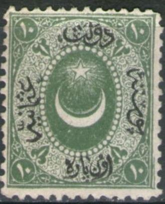


Türkei - Turquie
Return To Catalogue - Turkey overview - Turkey cancels on the first issues
Note: on my website many of the
pictures can not be seen! They are of course present in the
catalogue;
contact me if you want to purchase it.
For the Turkey 1863 issue, click here.
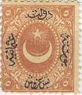
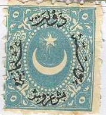
In total 4 (5 if the next issue is included) different types of the black inscription exist, recognizable with the upper part of the text. The first prints were done by Poitevin in Paris, the later prints (1868 onwards) were done locally in Turkey.
10 pa green 10 pa brown 10 pa lilac 20 pa yellow 20 pa green 1 Pi lilac 2 Pi yellow 2 Pi blue 2 Pi red 5 Pi red 5 Pi blue 25 Pi red 25 Pi yellow
Value of the stamps |
|||
vc = very common c = common * = not so common ** = uncommon |
*** = very uncommon R = rare RR = very rare RRR = extremely rare |
||
| Value | Unused | Used | Remarks |
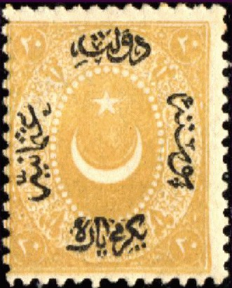 (1865 Type 1, compare upper black text, perforation 12 1/2) |
|||
| 10 pa green | *** | *** | |
| 20 pa yellow | * | * | |
| 1 Pi lilac | *** | *** | |
| 2 Pi blue | *** | * | |
| 5 Pi red | ** | *** | |
| 25 Pi red | RR | RR | |
|
|||
| 10 pa green (olive) | * | * | |
| 20 pa yellow (orange) | *** | *** | |
| 1 Pi lilac | *** | *** | |
| 2 Pi blue | * | ** | |
| 5 Pi red | * | ** | |
| 25 Pi red | RRR | RRR | |
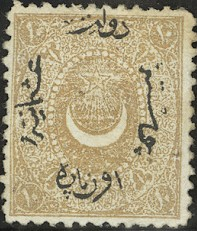 (1869 Type 3, badly locally printed perforation 13 1/2, 10 pa also 12 1/2)
|
|||
| 10 pa brown | *** | * | Exists with perforation 12 1/2: *** |
| 10 pa lilac | RR | RR | Only exist with irregular perforation |
| 20 pa green | *** | * | |
| 1 Pi yellow | * | * | |
| 2 Pi red | * | * | |
| 5 Pi blue | * | ** | |
| 25 Pi yellow | RR | RR | |
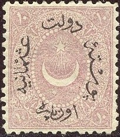 |
|||
| 10 pa lilac | *** | * | |
| 20 pa green | *** | * | |
| 1 Pi yellow | RR | *** | |
Postage due stamps, other colours (1865)


20 pa brown (with black text, 2 types) 20 pa brown (with brown border and text, 1868) 1 Pi brown (with black text) 1 Pi brown (with brown border and text, 1868) 2 Pi brown (with black text) 2 Pi brown (with brown border and text, 1868) 5 Pi brown (with black text) 5 Pi brown (with brown border and text, 1868) 25 Pi brown (with black text) 25 Pi brown (with brown border and text, 1868)
Value of the stamps |
|||
vc = very common c = common * = not so common ** = uncommon |
*** = very uncommon R = rare RR = very rare RRR = extremely rare |
||
| Value | Unused | Used | Remarks |
| Type 1, perforation 12 1/2 | |||
| 20 pa | * | * | |
| 1 Pi | * | * | |
| 2 Pi | *** | *** | |
| 5 Pi | ** | *** | |
| 25 Pi | *** | R | |
| Type 2, perforation 12 1/2 | |||
| 20 pa | *** | *** | |
| 1 Pi | * | * | |
| 2 Pi | *** | *** | |
| 5 Pi | *** | *** | |
| 25 Pi | RRR | RRR | |
| Type 3, perforation 13 1/2 or irregularly perforated, with brown border | |||
| 20 pa | *** | * | |
| 1 Pi | *** | * | |
| 2 Pi | ** | * | |
| 5 Pi | * | *** | |
| 25 Pi | R | R | |
1876 Type 5, more dense text


10 pa lilac 20 pa green 20 pa grey (1881) 1 Pi yellow 2 Pi red (1881)

(Unissued 25 Pi)
A 5 Pi and 25 Pi were prepared, but not issued?
Value of the stamps |
|||
vc = very common c = common * = not so common ** = uncommon |
*** = very uncommon R = rare RR = very rare RRR = extremely rare |
||
| Value | Unused | Used | Remarks |
| 10 pa | c | c | |
| 20 pa green | c | c | |
| 20 pa grey | * | * | |
| 1 Pi | c | c | |
| 2 Pi | c | c | |
Surcharged and more dense text
'1/4 Pre' on 10 pa lilac '1/2 Pre' on 20 pa green '1 1/4 Pre' on 50 pa red '2 Pres' on 2 Pi brown '5 Pres' on 5 Pi blue
Value of the stamps |
|||
vc = very common c = common * = not so common ** = uncommon |
*** = very uncommon R = rare RR = very rare RRR = extremely rare |
||
| Value | Unused | Used | Remarks |
| 1/4 Pre on 10 pa | * | * | I've seen this stamp with inverted black text |
| 1/2 Pre on 20 pa | * | * | I've seen this stamp with inverted black text |
| 1 1/4 Pre on 50 pa | * | ** | |
| 2 Pres on 2 Pi | *** | *** | |
| 5 Pres on 5 Pi | ** | *** | I've seen this stamp with inverted black text |
Overprinted with a 'beetle' like text (1917)
On type 1 of 1865
20 pa yellow (red overprint) 1 Pi lilac (or grey, red overprint) 2 Pi blue (red overprint) 5 Pi red On postage due stamps (type 1) of 1865 (blue overprint)

20 pa brown 1 Pi brown 2 Pi brown 5 Pi brown 25 Pi brown On type 2 of 1867 5 Pi red On type 3 of 1869
2 Pi red (perforation 13 1/2, blue overprint) 5 Pi blue (local rough irregular perforation) 25 Pi yellow (local rough irregular perforation, blue overprint) On postage due stamp of 1869 (type 3) 5 Pi brown (perforation 13 1/2, blue overprint) On type 4 of 1873
10 pa lilac (blue overprint) On type 5 of 1876

10 pa lilac (blue overprint) 20 pa green (red overprint) 20 pa grey (blue overprint) 1 Pi yellow (blue overprint) 2 Pi red (blue overprint) 1/4 Pi on 10 pa lilac (blue overprint) 1/2 Pi on 20 pa green (red overprint) 1 1/4 Pi on 50 pa red (blue overprint)
Value of the stamps |
|||
vc = very common c = common * = not so common ** = uncommon |
*** = very uncommon R = rare RR = very rare RRR = extremely rare |
||
| Value | Unused | Used | Remarks |
| On type 1 | |||
| 20 pa | R | R | |
| 1 Pi | R | R | |
| 2 Pi | R | R | |
| 5 Pi | R | R | |
| On postage due stamps (type 1) | |||
| 20 pa | R | R | |
| 1 Pi | R | R | |
| 2 Pi | R | R | |
| 5 Pi | R | R | |
| 25 Pi | R | R | |
| On type 2 | |||
| 5 Pi | R | R | |
| On type 3 | |||
| 2 Pi | R | R | |
| 5 Pi | R | R | |
| 25 Pi | RR | RR | |
| On postage due stamp, type 3 | |||
| 5 Pi | RR | RR | |
On type 4 |
|||
| 10 pa | RR | RR | |
| On type 5 | |||
| 10 pa | R | R | |
| 20 pa green | R | R | |
| 20 pa grey | R | R | |
| 1 Pi | R | R | |
| 2 Pi | R | R | |
| 1/4 Pi on 10 pa | R | R | |
| 1/2 Pi on 20 pa | R | R | |
| 1 1/4 Pi on 50 pa | R | R | |

(Error of colour 1 Pi red; the colour of the 25 Pi)

Triangular overprint with 'S C P',
applied in Mount Athos.
Typical cancel (for more cancels on the first issues see: Turkey cancels on the first issues):
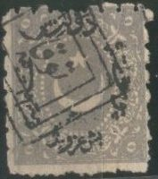

Stamps with a Mosul (nowadays Irak) cancel.
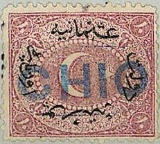
(Stamp used in Chio, Greece)
Forgeries, examples:
(Reduced sizes)
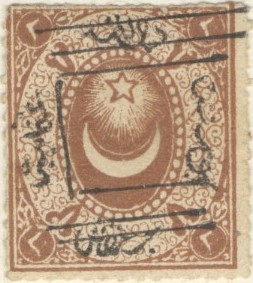

Note that the star above the moon is not nicely symmetric, it has
a longer lower right foot. These forgeries were also offered by
the forger Fournier (images can be found in 'The Fournier Album
of Philatelic Forgeries'). Note the typical square cancels
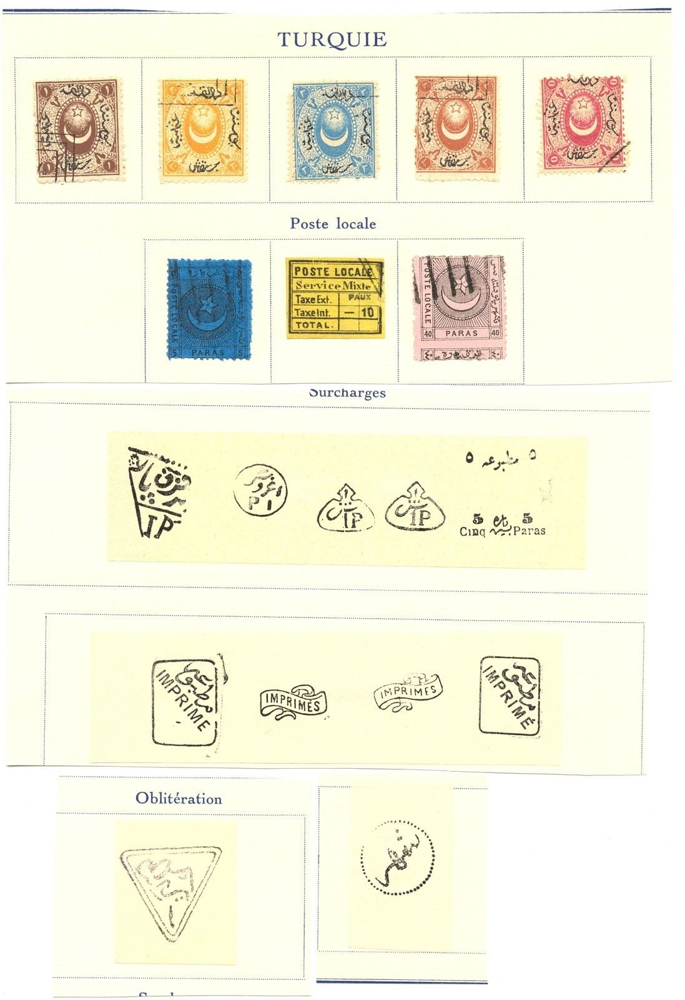
Another forgery is described in 'The Spud Papers': the '5 Pres' on 5 Pi blue; in each corner there is an arabic '5' (an 'o' like figure), this figure is surrounded by an octogonal frame consisting of a white line in the originals. In this particular forgery however, it is a white circular line.
The next forgery has the 'o's (which are actually '5's in Arabic) much wider than in the genuine stamps:


Forgeries with wide "o"s. Note the two clear
semicircles in the crescent. There are 57 pearls in this forgery.
It is described as the fourth forgery in Album Weeds.
Another forgery set cancelled with a pattern of dots:


I know that the Spiro brothers made forgeries of at least the following values: 1 Pi brown, 5 Pi brown, '1/4 Pre' on 10 pa lilac, '1/2 Pre' on 20 pa green, '1 1/4 Pre' on 50 pa red, '2 Pres' on 2 Pi brown and '5 Pres' on 5 Pi blue. I do not know which of the above forgeries is a Spiro forgery. I've seen whole sheets of 25 stamps of these forgeries.
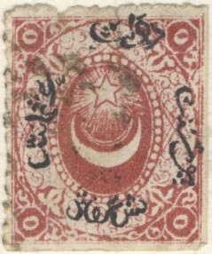
Strange looking 5 Pi stamp, probably a forgery.

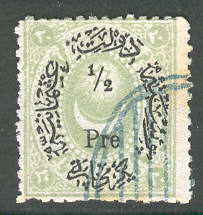


A 20 pa blue forgery with no black inscription, but a very small
cancel 'KONSTANTINOPEL 4 5 91 N'. There is a white outline around
the star.
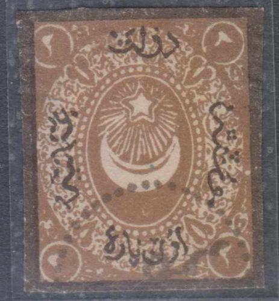 
Another forgery with a white outline around the star. The moon is
also not very convincing. It might have been a cut from a
postcard very similar to the ones shown here?
Forged cancels made by Fournier, which might have been used on
these stamps. The cancels were taken from 'The Fournier Album of
Philatelic Forgeries'. The EBNOUB cancel was actually used for
forgeries of Egypt (as well as the Sedfa cancel?).
For issues of Turkey from 1876 to 1900, click here.


{kind=link}
{kind=link}
{kind=link}
{kind=link}
{kind=link}
{kind=link}
{kind=link}
{kind=link}